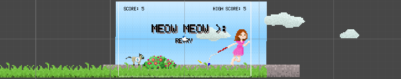

Na mesma época, estava viciada no jogo Final Fantasy XV, um jogo incrível, diga-se de passagem/.
Nele, o personagem principal é um príncipe, Noctis Lucis Caelum, possui características que eu julgo semelhantes à do gatinho Noctis: pele clara, cabelos escuros e olhos claros, sem contar que ambos são gatinhos hahahah
Então, após procurar muitos nomes que não me satisfaziam, porque não colocar o nome de um personagem que admiro?
Noctis Lucis Caelum é um nome originado do Latim. Seu significado em português é Luz do céu Noturno, que, de certo modo, faz jus ao nome pois ele fica muito agitado e brincalhão no período da noite, um verdadeiro foguetinho.
A imagem 1 retrata o jogo do Noctis sendo desenvolvido.Você pode clicar na foto para saber mais sobre o jogo que está sendo desenvolvido inspirado nele.
A imagem 2 retrata o Noctis atualmente. Você pode clicar nela para conhecer a história dele.
A image 3 retrata o personagem Noctis, de Final Fantasy XV.
|